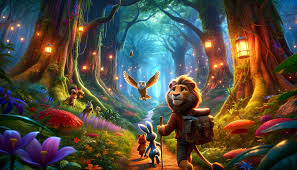

Animation, with its boundless creativity, captivating storytelling, and mesmerizing visuals, stands as a testament to the power of imagination and innovation. From the whimsical worlds of childhood fantasies to the epic adventures of heroes and heroines, animation has enchanted audiences of all ages for generations, offering a window into realms where anything is possible and dreams come to life.
Animation is a filmmaking technique by which still images are manipulated to create moving images. In traditional animation, images are drawn or painted by hand on transparent celluloid sheets (cels) to be photographed and exhibited on film. Animation has been recognized as an artistic medium, specifically within the entertainment industry. Many animations are computer animations made with computer-generated imagery (CGI). Stop motion animation, in particular claymation, has continued to exist alongside these other forms.

Animation is contrasted with live-action film, although the two do not exist in isolation. Many moviemakers have produced films that are a hybrid of the two. As CGI increasingly approximates photographic imagery, filmmakers can easily composite 3D animations into their film rather than using practical effects for showy visual effects (VFX).
Computer animation can be very detailed 3D animation, while 2D computer animation (which may have the look of traditional animation) can be used for stylistic reasons, low bandwidth, or faster real-time renderings. Other common animation methods apply a stop motion technique to two- and three-dimensional objects like paper cutouts, puppets, or clay figures.
A cartoon is an animated film, usually a short film, featuring an exaggerated visual style. The style takes inspiration from comic strips, often featuring anthropomorphic animals, superheroes, or the adventures of human protagonists. Especially with animals that form a natural predator/prey relationship (e.g. cats and mice, coyotes and birds), the action often centers on violent pratfalls such as falls, collisions, and explosions that would be lethal in real life.
Analog mechanical animation media that rely on the rapid display of sequential images include the phénakisticope, zoetrope, flip book, praxinoscope, and film. Television and video are popular electronic animation media that originally were analog and now operate digitally. For display on computers, technology such as the animated GIF and Flash animation were developed.
The roots of animation can be traced back through centuries of human history, with early forms of animation dating back to ancient civilizations. From cave paintings depicting animals in motion to the intricate mechanical devices of the Renaissance, humans have long been fascinated by the idea of bringing still images to life.
It wasn't until the late 19th and early 20th centuries that animation truly began to take shape as an art form. Pioneering animators like Winsor McCay, Walt Disney, and the Fleischer brothers pushed the boundaries of the medium, experimenting with techniques such as hand-drawn animation, stop-motion, and claymation to create captivating worlds and unforgettable characters.
In the decades that followed, animation continued to evolve, embracing new technologies and pushing the limits of imagination. From the groundbreaking innovations of Disney's "Snow White and the Seven Dwarfs" to the revolutionary computer-generated imagery (CGI) of Pixar's "Toy Story," animation has continually reinvented itself, captivating audiences with its endless possibilities and boundless creativity.
At the heart of the animation genre lies a rich tapestry of storytelling, visual artistry, and technical prowess. Whether it's the hand-drawn masterpieces of Studio Ghibli or the cutting-edge CGI of DreamWorks Animation, animation offers a diverse array of styles and techniques, each with its own unique charm and appeal.
1. Visual Spectacle: From lush, hand-painted landscapes to dazzling, computer-generated effects, animation captivates audiences with its stunning visuals and breathtaking imagery. Whether it's the colorful worlds of children's cartoons or the intricately detailed environments of fantasy epics, animation transports viewers to realms of boundless beauty and wonder.
2. Endearing Characters: At the heart of every great animated film lies a cast of unforgettable characters, each with their own distinct personality and charm. From courageous heroes and plucky heroines to mischievous sidekicks and dastardly villains, animation brings characters of all shapes and sizes to life, endearing them to audiences and capturing their hearts in the process.
3. Imagination and Creativity: Unlike live-action films, which are bound by the constraints of reality, animation offers filmmakers the freedom to explore limitless worlds of imagination and creativity. Whether it's the surreal landscapes of a dream sequence or the whimsical inventions of a mad scientist, animation allows artists to push the boundaries of what's possible and create worlds that defy logic and reason.
4. Emotional Depth: Despite its often lighthearted tone, animation is capable of exploring complex themes and emotions with depth and sincerity. Whether it's the bittersweet nostalgia of childhood memories or the poignant drama of love and loss, animation has the power to touch hearts and evoke a wide range of emotions in its audience.
The impact of animation extends far beyond the realm of entertainment, shaping popular culture and inspiring generations of artists, filmmakers, and storytellers. From the iconic characters of Mickey Mouse and Bugs Bunny to the groundbreaking techniques of "Steamboat Willie" and "Fantasia," animation has left an indelible mark on the collective consciousness of humanity.
Animation has served as a powerful medium for social commentary and cultural expression, offering a platform for marginalized voices and underserved communities to tell their stories and share their experiences with the world. From the groundbreaking diversity of "Coco" and "Moana" to the empowering themes of "Frozen" and "Zootopia," animation has the power to inspire change and promote empathy and understanding in ways that transcend language and cultural barriers.
In a world filled with chaos and uncertainty, animation offers a beacon of hope and a source of joy for audiences of all ages. Whether you're a child discovering the wonders of animation for the first time or an adult revisiting beloved classics from your youth, there's something truly magical about the art form that transcends age, gender, and cultural boundaries.
So immerse yourself in the enchanting world of animation, where dreams come to life and anything is possible. From the timeless classics of Disney and Pixar to the bold experiments of independent animators and visionary auteurs, animation offers a universe of endless possibilities and boundless creativity, just waiting to be explored. So grab your popcorn, settle in, and prepare to be whisked away on an unforgettable journey into the mesmerizing world of animation!
These movies showcase the diversity and creativity of the animation genre, offering audiences of all ages a captivating escape into worlds of wonder, imagination, and magic.
Spirited Away -Directed by Hayao Miyazaki, this Studio Ghibli masterpiece follows the journey of a young girl named Chihiro as she navigates a mysterious and magical world inhabited by spirits and gods.
Toy Story series -Pixar's groundbreaking franchise follows the adventures of Woody, Buzz Lightyear, and their toy friends as they come to life and embark on epic adventures in the world of humans.
The Lion King -Disney's classic tale of Simba, a young lion prince who must reclaim his rightful place as king after the tragic death of his father, Mufasa.
Frozen -Disney's modern-day classic follows the journey of two sisters, Anna and Elsa, as they navigate the icy wonders and dangers of the kingdom of Arendelle.
Wall-E -Pixar's heartwarming tale of a lonely robot named Wall-E who embarks on a journey across the galaxy to save humanity and find love in a post-apocalyptic world.
Finding Nemo -Pixar's underwater adventure follows the journey of Marlin, a clownfish, as he searches for his son, Nemo, who has been captured by a diver and taken to a dentist's office.
Beauty and the Beast -Disney's timeless tale of Belle, a young woman who falls in love with a cursed prince, and the enchanted objects of his castle who help them break the spell.
Shrek -DreamWorks' irreverent fairy tale follows the journey of Shrek, an ogre who sets out to rescue Princess Fiona with the help of his loyal sidekick, Donkey.
The Nightmare Before Christmas -Tim Burton's dark and whimsical tale follows Jack Skellington, the Pumpkin King of Halloween Town, as he discovers the magic of Christmas.
Coco - Disney-Pixar's vibrant celebration of Mexican culture follows the journey of Miguel, a young boy who embarks on a quest to unlock the secrets of his family's past on Dia de los Muertos (Day of the Dead).